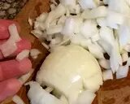

“La carbonada es un plato básico de la cocina cuyana cuyo origen se encuentra en la fusión de las culturas europea y latinoamericana”. En Bélgica existe un plato similar llamado “carbonade” pero que incluye cerveza y carne de cerdo. “Se supone que llegó a América con la primera ola de inmigración”
En Mendoza se realiza con carne blanda de vaca, como la nalga. “No lleva ningún hueso como otras preparaciones similares y se distingue del locro, que es originario del norte, porque no lleva maíz ni porotos”
Ingredientes
4 raciones
1/2 k carne vacuna tipo nalga o bola de lomo (usé esta última)
250 grs zapallo calabaza
1 papa grande
1 camote grande
1-2 tomates maduros sin piel
1 cebolla grandecita
2 zanahorias medianas
1 choclo (si hay)
1 pimiento rojo mediano
1 pimiento verde mediano
4 cdas. aceite de oliva
1 cda. sopera sal gruesa
1 cdita colmada de comino
1 cdita. colmada de ají picante
3-4 hojas laurel
agua hirviendo c/n (puede ser caldo)
Pasos
Lo primero es desgrasar la carne y cortarla en cubos grandecitos, mientras se calienta la olla o la cazuela de barro donde harás la carbonada.
Vierte el aceite y, cuando esté caliente, añade la carne y las especies. Revuelve y deja que se empareje el blanqueo de los bocados.
Mientras tanto, pela y pica la cebolla, cortándola en "cubitos"; bueno, en algo parecido. Añádela a la carne y revuelve. Deja sancochar bien.

En esos minutos, pica los pimientos en cubos y el tomate ídem, previamente pelado.
Añade los pimientos, revuelve y verifica el jugo de cocción. Agrega un poco de agua (la cantidad variará según el diámetro de la olla que estés usando), de modo que quede a la mitad de la preparación. Tapa y cocina 10'. Fuego moderado.
Agrega los tomates y la sal, revuelve, tapa y continúa la cocción por 20'. Fuego mínimo.
Es tiempo de pelar las hortalizas y cortarlas en cubitos chicos (un poco más grandecitos que si fueran para ensalada rusa). NO tengan en cuenta que corté la zanahora en rodajas. Pueden dejar las verduras en agua para que no se pongan negras.
A los 20', agrega las hortalizas, revuelve, sube el fuego hasta que rompa el hervor y deja cocinar durante 30', a fuego mínimo.
5' antes de que esté lista, corta los choclos en rodajas finas y añade. Cocina a fuego vivo y listo. Disfrútala bien caliente.